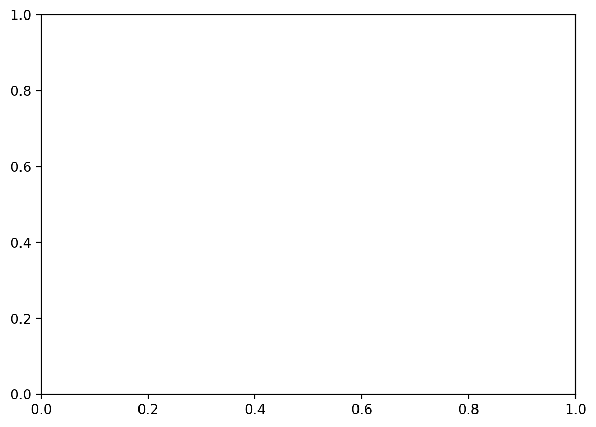
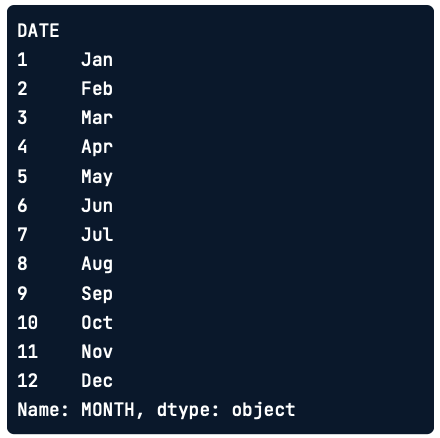
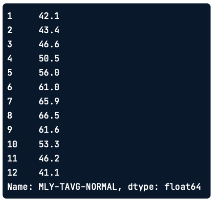
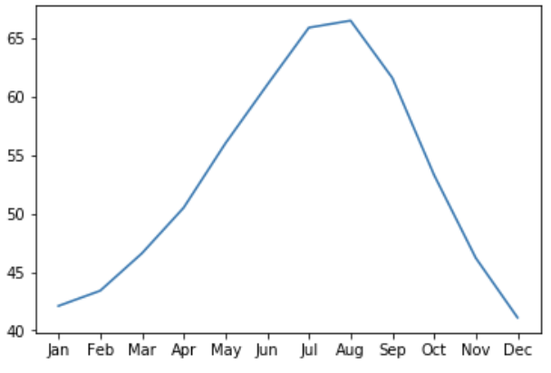
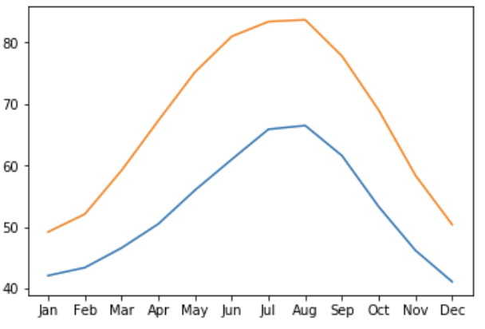
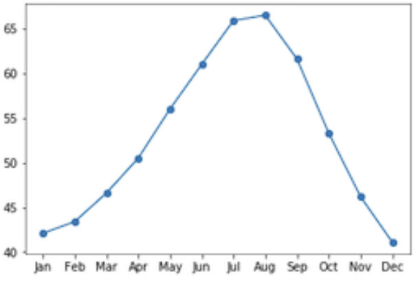
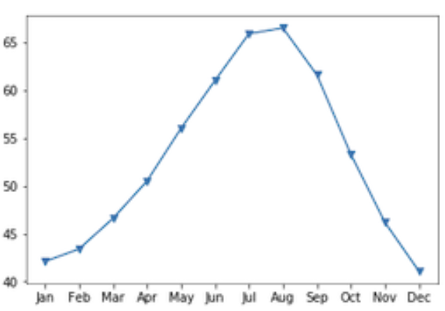
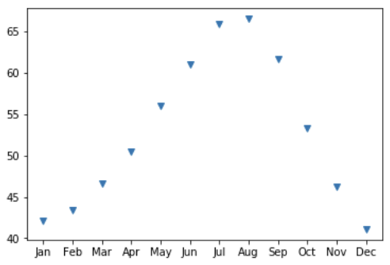
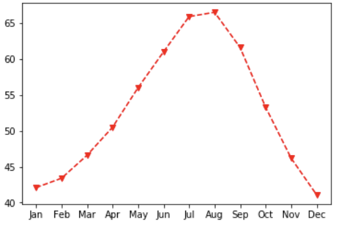
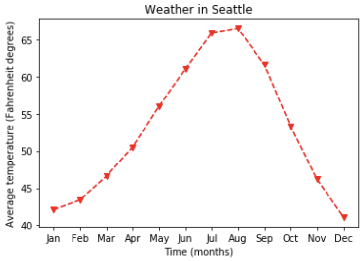

import matplotlib.pyplot as plt
fig, ax = plt.subplots()
plt.show()
Python
Juan Isaula
March 1, 2026
La idea de esté artículo es que el lector aprenda a crear, personalizar y compartir visualizaciones de datos con Matplotlib.
Las visualizaciones de datos nos permiten extraer conclusiones a partir de los datos y comunicar sobre ellos con otras personas.
Existen muchas bibliotecas de Software para visualizar datos. Una de las principales ventajas de Matplotlib es que te brinda control total sobre las propiedades de los gráficos que desarrollamos.
Hay muchas formas de usar Matplotlib. En este caso, utilizaremos la interfaz principal orientada a objetos. Esta interfaz se ofrece a través del submódulo pyplot. Aquí importamos este submódulo y lo nombramos plt.
Aunque no es necesario usar el nombre plt para que el programa funcione, es una convención muy extendida, y la seguiremos aquí también.
El comando plt.subplots(), cuando se llama sin argumentos, crea dos objetos diferentes:
Aún no se ha añadido ningún dato.
Añadamos algunos datos a nuestra figura. Aquí tenemos algunos datos. Este es un DataFrame que contiene información sobre el tiempo en la ciudad de Seattle en los distintos meses del año.

La columna MONTH contiene los nombres de tres letras de los meses del año. Y la columna MLY-TAVG-NORMAL contiene las temperaturas de esos meses, en grados Fahrenheit, promediadas a lo largo de un periodo de diez años.

Para añadir los datos a los ejees, llamamos a un comando de trazado. Los comandos de trazado son métodos del objeto ax. Por ejemplo, aquí llamamos al método plot con la columna MONTH como primer argumento y la columna MLY-TAVG-NORMAL como segundo argumento. Por último, llamamos a la función plt.show() para mostrar el efecto del comando trazado. Este añade una línea al gráfico.

La dimensión horizontal del gráfico representa los meses según su orden y la altura de la línea en cada mes representa la temperatura media. Las tendencias de los datos ahora son mucho más claras que cuando simplemente leíamos las temperaturas en la tabla.
Si quieres, puedes añadir más datos al gráfico. Por ejemplo, también tenemos una tabla con datos sobre las temperaturas medias en la ciudad de Austin Texas.
Así es como se vería todo el código para crear esta figura. Primero, creamos los objetos fig, ax. Llamamos al método plot de ax para añadir primero las temperaturas de Seattle y luego las de Austin a los ax. Por último, le pedimos a Matplotlib que nos muestre la figura.

Ahora que ya sabemos cómo añadir datos a una gráfica, vamos a empezar a personalizarlas.
Primero, personalicemos el aspecto de los datos en la gráfica. Una cosa que quizá queramos mejorar es que la gráfica anterior parece continua, pero en realidad solo se midió en intervalos mensuales. Una forma de indicarlo es añadir marcadores a la gráfica que muestren dónde existen datos y qué partes son solo líneas que conectan los puntos de datos.
El método plot admite un argumento de palabra clave opcional, marker, que te permite indicar que quieres añadir a la gráfica y también qué tipo de marcadores prefieres. Por ejemplo, pasar la letra minúscula “o” indica que quieres usar círculos como marcadores.

Si en cambio pasaras una “v” minúscula, obtendriamos marcadores con forma de triángulos apuntando hacia abajo.

Para ver todos los estilos de marcadores posibles, puedes visitar esta página https://matplotlib.org/stable/api/markers_api.html de la documentación en línea de Matplotlib.
Puedes ir aún más lejos para enfatizarlo combinando el aspecto de estas líneas de conexión. Esto de hace añadiendo el argumento de palabra clave linestyle.
Aquí se usan dos guiones para indicar que la línea debe ser discontinua.
Incluso puedes eliminar las líneas por completo pasando la cadena “None” como valor de este argumento de palabra clave.

Por último, puedes elegir el color que quieres usar para los datos. Por ejemplo, aquí hemos decidido mostrar estos datos en rojo, indicado por la letra “r”.

Otra cosa importante que personalizar son las etiquetas de los ejes. Si quieres que tus visualizaciones comuniquen bien, debes etiquetar siempre los ejes. Es realmente importante, pero a menudo se olvida. Además del método plot, el objeto ax tiene varios métodos que empiezan por la palabra set. Y para añadir un título a los ax con el método set.title()

Todo esto aporta otra fuente de información sobre los datos para dar contexto a la visualización.